Generell werden die Vertreterprovisionen automatisch beim Fakturendruck berechnet. Hierbei werden der Vertreter, welcher in der Belegerfassung eingetragen ist, sowie der Provisionscode, welcher im Artikelstamm eingetragen wird bzw. im Beleg selbst (Artikelzeile in der Belegmitte) ggfs. übersteuert wird, zur Abrechnung herangezogen.
Im Menüpunkt…
1 WinLine FAKT
1 Auswertungen
1 Vertreterauswertungen
1 Vertreterauswertungen
… werden verschiedene Auswertungen für den Bereich der Vertreter bzw. der Provisionsabrechnungen bereitgestellt.
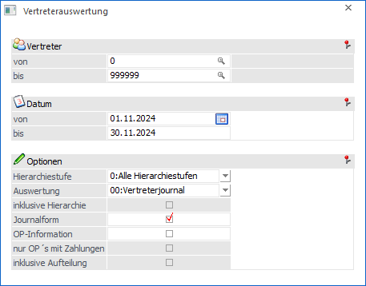
Selektion
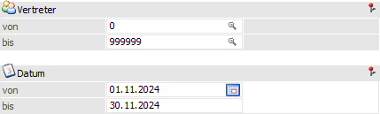
Ø Vertreter von / bis
An dieser Stelle kann den Vertreter bzw. die Vertretergruppe eingegrenzt werden, welche in der Auswertung berücksichtigt werden sollen.
Ø Datum von / bis
Hier erfolgt die Selektion auf den zu berücksichtigen Datumszeitraum. Je nach Auswertung ist hierbei das Fakturendatum oder das Übernahmedatum gemeint.
Optionen
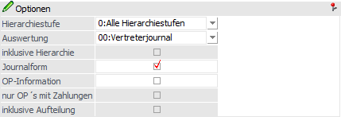
Ø Hierarchiestufe
Aus der Auswahlliste kann die Hierarchiestufe gewählt werden, für welche die Auswertung durchgeführt werden soll. Hierbei werden alle Hierarchiestufen vorgeschlagen, welche in den FAKT-Parametern angelegt wurden. Mit der Option "0 - Alle Hierarchiestufen" erfolgt keine Einschränkung auf eine Hierarchieebene.
Ø Auswertung
Folgende Vertreterauswertungen stehen über eine Auswahlliste zur Verfügung:
ü 0 - Vertreterjournal
Im
Vertreterjournal werden alle Fakturenzeilen, aufgesplittet auf die einzelnen
Provisionscodes, angezeigt. Neben dem jeweiligen Provisionscode werden auf dem
Vertreterjournal z.B. auch die eigentliche Provision die Bemessung sowie das
Provisionsschema angeführt.
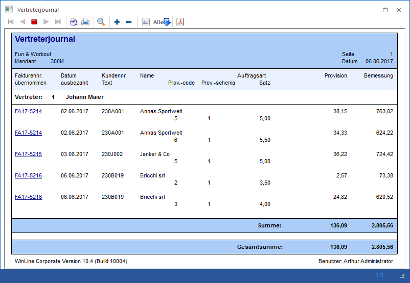
ü 1 - Vertreterkontoblatt
Auf dem
Vertreterkontoblatt werden alle provisionsrelevanten Fakturenzeilen pro
Vertreter bzw. Vertretergruppe ausgewiesen.
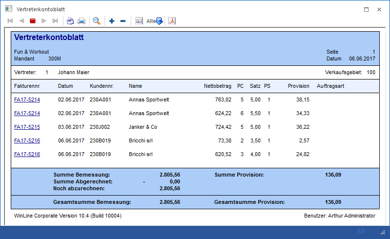
ü 2 - Fakturenliste
(Gesamtumsatz)
Diese Liste enthält alle Fakturen die im angegebenen Zeitraum
liegen, wobei sowohl jene Fakturen enthalten sind für die der eigentliche
Vertreter hinterlegt ist, als auch jene bei denen er durch seine Hierarchiestufe
bzw. Vertretergruppe beteiligt ist. Diese Liste wird aufgrund des
Vertreterjournals generiert.
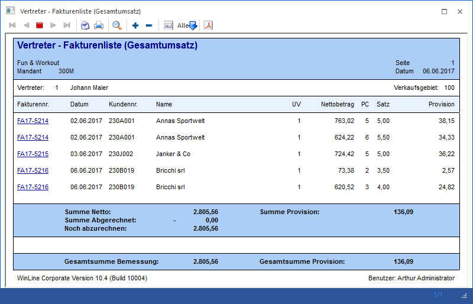
ü 3 - Fakturenliste (Persönlicher
Umsatz)
Diese Liste enthält jene Fakturen aus dem angegebenen Zeitraum für
die der "eigentliche" Vertreter selbst hinterlegt war (die Liste kann natürlich
auch pro Vertretergruppe ausgegeben werden). Diese Liste wird aufgrund des
Vertreterjournals generiert.
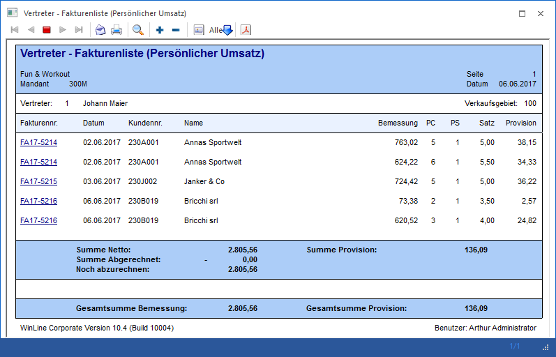
ü 4 - Zahlungsliste
(Gesamtumsatz)
Diese Liste enthält alle Fakturen, welche im angegebenen
Zeitraum liegen, wobei sowohl jene Fakturen enthalten sind für die der
eigentliche Vertreter hinterlegt ist, als auch jene bei denen er durch seine
Hierarchiestufe bzw. Vertretergruppe beteiligt ist. Diese Liste wird aufgrund
des Provisionsübernahmejournals generiert, wobei für die
Datumseinschränkung das Übernahmedatum herangezogen wird.
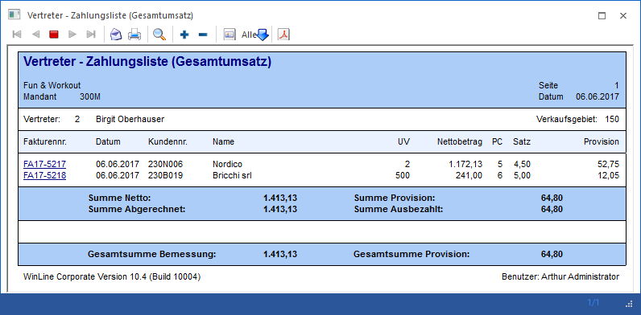
ü 5 - Zahlungsliste (Persönlicher
Umsatz)
Diese Liste enthält jene Fakturen aus dem angegebenen Zeitraum für
die der "eigentliche" Vertreter selbst hinterlegt war (ebenso kann die Liste für
den "persönlichen Umsatz" einer Vertretergruppe ausgegeben werden). Diese Liste
wird aufgrund des Provisionsübernahmejournals generiert, wobei für die
Datumseinschränkung das Übernahmedatum herangezogen wird.
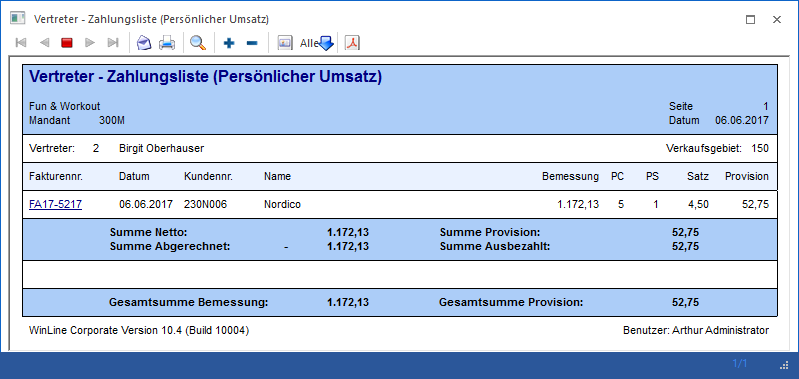
ü 6 - Offene Zahlungen
Hier
werden alle offenen Posten aufgelistet, die für den / die selektierten Vertreter
von Relevanz sind bzw. die in der Finanzbuchhaltung bereits (teil-)ausgeglichen
sind und daher für die Auszahlung relevant sind.
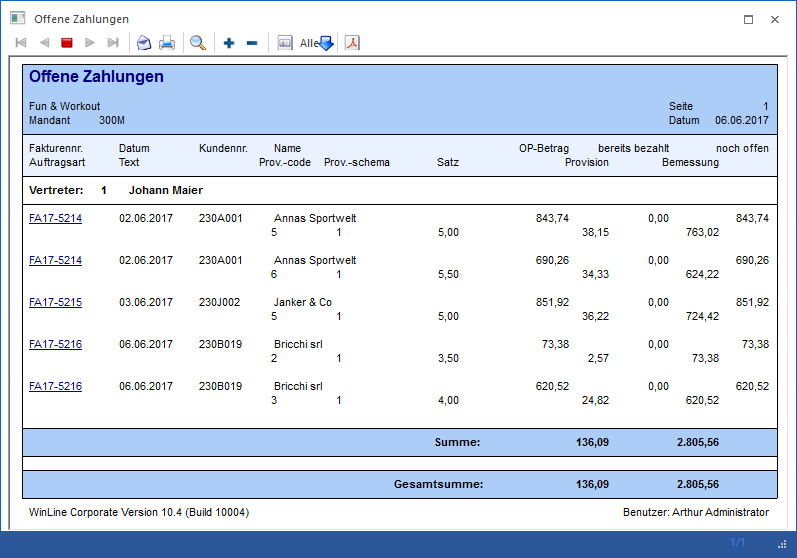
ü 7 - Provisionsstatistik
Die
Provisionsstatistik enthält alle übernommenen Provisionsbeträge nach Vertreter
und Provisionscode summiert. Zur Anzeige kommen auch die verschieden möglichen
Provisionsschemata. Als Grundlage für diese Auswertung wird das
Übernahmejournal herangezogen.
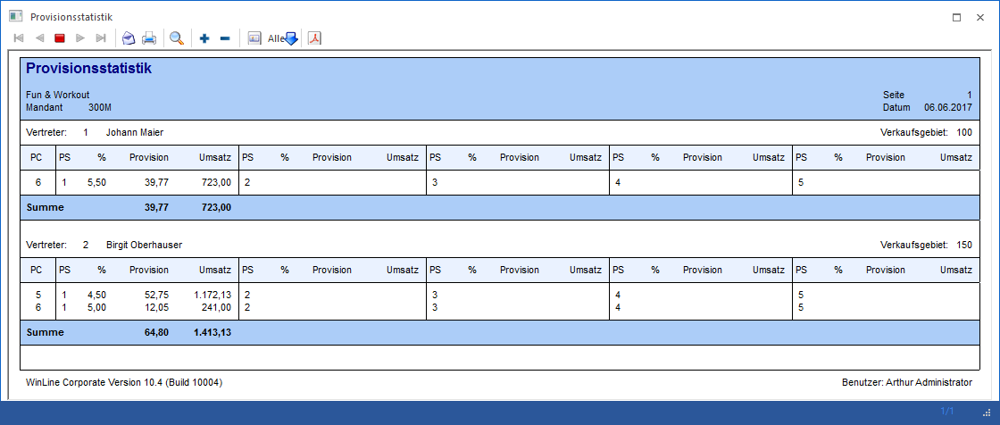
ü 8 - Evidenzliste
Die
Evidenzliste enthält alle Fakturen im Auswertungszeitraum (wobei der
Auswertezeitraum das Datum der Provisionsübernahme betrifft), in denen Vertreter
enthalten sind. Es wird pro Vertreter der Kunde mit den einzelnen Fakturenzeilen
ausgegeben.
Unter "Gesamt" werden die Einzelzeilen der
betreffenden Faktura summiert.
Die Spalte "Bereits bezahlt" enthält
die Summe Bemessungsgrundlagen der Provision(en), die dem Vertreter bereits vor
Beginn des Auswertungszeitraumes ausbezahlt wurden
(Provisionsübernahmejournal).
In der Spalte "Eingänge neu" werden alle
dazugehörigen Übernahmejournalzeilen ab dem Auswertezeitraum summiert.
Unter
"Kürzung" werden die Skontos und Fremdwährungsdifferenzen summiert
ausgewiesen.
In der Spalte "Offen" wird die dazugehörige Differenz
angedruckt.
Des Weiteren wird ggfs. vor der Endsumme eine so genannte
Saldozeile gedruckt. Dieser "Saldo" besteht aus der Summe aller Zeilen die keine
Detailinformationen besitzen (Vertretergruppe die ohne Detail auflöst) und somit
nicht auf der Evidenzliste angedruckt werden. Für die "Saldozeile" stehen die
Werte der Spalten "Bereits bezahlt" und "Eingänge neu" zur
Verfügung.
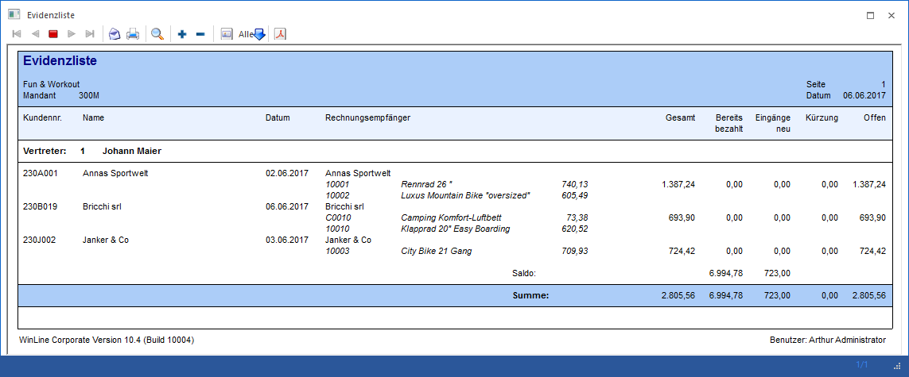
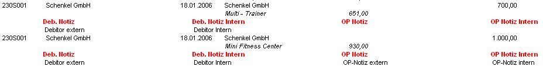
Hinweis
Um Aktionen zu einem bestimmten
Offenen Posten angezeigt zu bekommen (im Standardformular), muss zusätzlich zu
den Feldern der "Langbeschreibung" das Feld "OP-Nummer" befüllt worden
sein.
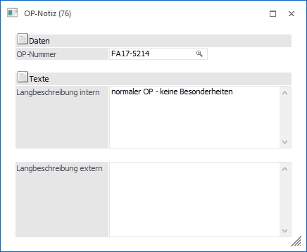
ü 9 - Evidenzliste -
Aufteilung
Gleich der Evidenzliste mit der Option "inkl. Aufteilung" wird in
dieser Auswertung für Vertretergruppen die Aufteilung ausgegeben. Allerdings
werden auf dieser Liste nur die Nummer und der Name der Vertretergruppe sowie
die Aufteilung ausgegeben. Alle anderen Informationen sind auf der Evidenzliste
zu finden. Berücksichtigt werden auf dieser Liste nur jene Vertretergruppen, die
neue Zahlungen in der Auswerteperiode haben.
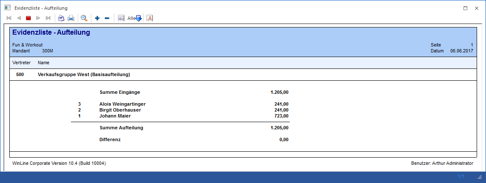
ü 10 - Evidenzliste - Aufteilung -
Detail
Diese Liste entspricht im Wesentlichen der Liste 9 "Evidenzliste
-Aufteilung", beinhaltet jedoch zusätzlich auch alle Vertreter die durch eine
nachträgliche Aufteilung entstanden sind und im Journal dazu keine
Detailinformationen vorhanden sind. Pro Vertreter wird eine Summe ausgegeben,
auch wenn dieser in mehreren Gruppen enthalten ist. Zusätzlich wird zu jeden
Vertreter der Prozentsatz seines Anteils an der Zahlungssumme
angedruckt.
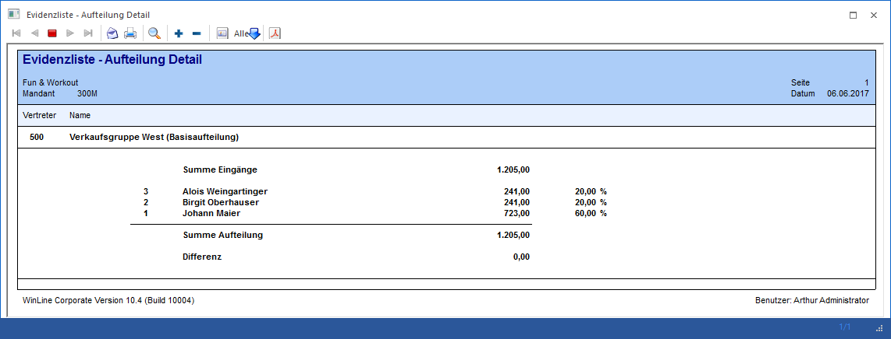
Ø inklusive Hierarchie
Die aktive Option "inklusive Hierarchie" bewirkt, dass bei den Auswertungen "3 - Fakturenliste (Gesamtumsatz)" und "5 - Zahlungsliste (Gesamtumsatz)" die Fakturenzeilen auch die Information der beteiligten Hierarchiemitglieder enthält. Sortiert wird hier nach dem Vertreter, welcher den Umsatz ausgelöst hat.
Ø Journalform
Bei aktivierter Option erfolgen zwischen den einzelnen Vertretern keine Seitenumbrüche, d.h. die Auswertung erfolgt in Journalform. Diese Option steht nicht für die Ausgabe des Vertreterkontoblattes zur Verfügung!
Ø OP-Information
Bei aktivierter Option erfolgt die Ausgabe der Liste inklusive einer Information über den Offenen Posten pro Fakturenzeile. Hier werden der Betrag, die Zahlung, der Skonto und der noch offene Zahlungsbetrag des offenen Postens ausgegeben.
Ø nur OP´s mit Zahlungen
Ist diese Option aktiviert, so werden nur OP´s mit Zahlungen im Auswertezeitraum ausgegeben.
Ø inklusive Aufteilung
Diese Option steht nur bei der Evidenzliste zur Verfügung. Wird aktiviert, so wird im Anschluss an Vertretergruppen die Aufteilung (sofern vorhanden) angedruckt.
Ebenso wird die Summe der Aufteilung sowie die Differenz zwischen Aufteilungssumme und Summe der Eingänge gebildet und ausgegeben.
Buttons
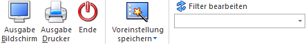
Ø Ausgabe Bildschirm
Mit Hilfe des Buttons "Ausgabe Bildschirm" oder der Taste F5 wird die Auswertung am Bildschirm ausgegeben.
Achtung
Bei Verwendung von Vertretergruppen kann es vorkommen, dass die Summe der auszubezahlenden Provision von dem Betrag lt. Provisionscode der Vertretergruppe im Verhältnis zur Provisionsbasis abweicht (nähere Informationen entnehmen Sie bitte dem WinLine FAKT1 - Handbuch Kapitel Vertreterstamm), da es sich bei der Angabe der Anteile der einzelnen Vertreter an der Provisionsbasis der Vertretergruppe um Prozentsätze handelt und die Summe der Prozentsätze in dieser nicht unbedingt 100 ergeben muss, da jeder Vertreter (mit Recht) seinen üblichen Provisionsprozentsatz bekommen soll.
Bei Auswertungen des Vertreterjournals bzw. der Vertreterkontoblätter am Bildschirm besteht die Möglichkeit durch Anklicken der Fakturennummer sich die Rechnung anzeigen zu lassen. Wird die Rechnung in der Belegverwaltung nicht gefunden (weil sie z.B. durch den REORG eliminiert wurde), wird die Suche im Archiv (sofern vorhanden) fortgesetzt.
Ø Ausgabe Drucker
Durch Anwahl des Buttons "Ausgabe Drucker" wird die Auswertung am Drucker ausgegeben.
Achtung
Bei Verwendung von Vertretergruppen kann es vorkommen, dass die Summe der auszubezahlenden Provision von dem Betrag lt. Provisionscode der Vertretergruppe im Verhältnis zur Provisionsbasis abweicht (nähere Informationen entnehmen Sie bitte dem WinLine FAKT1 - Handbuch Kapitel Vertreterstamm), da es sich bei der Angabe der Anteile der einzelnen Vertreter an der Provisionsbasis der Vertretergruppe um Prozentsätze handelt und die Summe der Prozentsätze in dieser nicht unbedingt 100 ergeben muss, da jeder Vertreter (mit Recht) seinen üblichen Provisionsprozentsatz bekommen soll.
Ø Ende
Durch Anwahl des Buttons "Ende" bzw. der Taste ESC wird die Auswertung geschlossen.
Ø Voreinstellung speichern
Durch Anwahl dieses Buttons erfolgt eine benutzerspezifische Speicherung aller im Fenster getätigten Einstellungen. Diese sogenannten "Voreinstellungen" können jederzeit wieder abgerufen werden und ermöglichen dadurch ein schnelleres und zielorientierteres Arbeiten (nähere Informationen entnehmen Sie bitte dem Kapitel "Die Voreinstellungen").
Ø Filter bearbeiten
Durch Anklicken des Buttons "Filter bearbeiten" kann die Auswertung nach frei definierbaren Kriterien eingeschränkt werden.